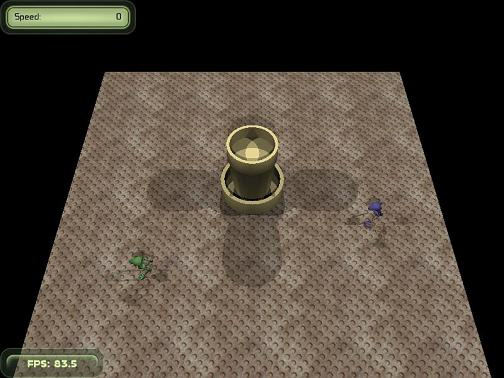
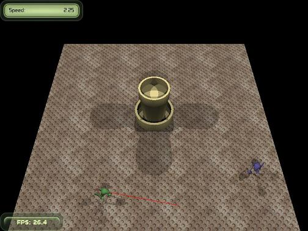
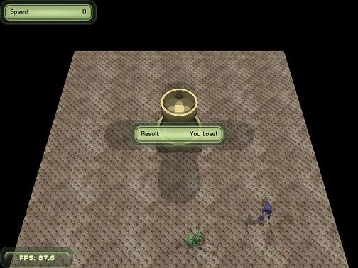

-
The steps below follow on from the steps in the
first tutorial and it is assumed the
reader is familiar with them. I have not defined any namespaces, so it
is clear when an Ogre class is being used. I have also omitted the
header definitions and the assigning of values to member variables in
constructors from the code examples. They are in the
downloadable code.
-
First another object will be placed on the centre of the ground. The
object is a simplified version of the
Tozeur sculpture built
in an older Blender tutorial. I have only used the top part of that
sculpture and removed all but the concrete material. After exporting
from Blender using the technique in the previous tutorial, the resulting
`scuplture.mesh` file is placed in the resources folder of the
downloadable project (the modified
`.blend` file is also there). The Blender export also creates a
`.material` file, but we don’t want another of those, so just copy the
materials from it into the project’s existing `.material` file.
-
To place the sculpture on the centre of the plane just add the code
below to `MechWalkTest::createScene` after the mech is placed. It can be
seen that the code for placing the mech and sculpture is very similar.
Ogre::Entity* sculptureEntity = mSceneMgr->createEntity("Sculpture", "Sculpture.mesh");
Ogre::AxisAlignedBox sculptureBox = sculptureEntity->getBoundingBox();
mSculptureNode = mSceneMgr->getRootSceneNode()->createChildSceneNode();
mSculptureNode->attachObject(sculptureEntity);
mSculptureNode->setScale(4.0f, 17.0f, 4.0f);
mSculptureNode->setPosition(0, -sculptureBox.getCorner(Ogre::AxisAlignedBox::FAR_LEFT_BOTTOM).y*17.0f, 0);
sculptureEntity->setCastShadows(true);
In fact this is so close to how the mech is placed that if you ran the
program now the sculpture would be on top of the mech. Move the mech to
one of the corners by changing the mech’s `setPosition` call to the
below.
mMechNode->setPosition(mPlaneSize/4, -box.getCorner(Ogre::AxisAlignedBox::FAR_LEFT_BOTTOM).y, mPlaneSize/4);
-
Now it is time to place the opposition mech. Again, it done in a very
similar manner to the player mech. Add the following code to
`MechWalkTest::createScene`. The `yaw()` call makes the opposing mech
face in the opposite direction to the player mech by spinning it 180
degrees around the Z axis (`pitch()` & `roll()` spin around the other
axes).
Ogre::Entity* oppEntity = mSceneMgr->createEntity("Opponent", "Mech.mesh");
Ogre::AxisAlignedBox oppBox = oppEntity->getBoundingBox();
mOppNode = mSceneMgr->getRootSceneNode()->createChildSceneNode();
mOppNode->attachObject(oppEntity);
mOppNode->setScale(0.8f, 0.8f, 0.8f);
mOppNode->setPosition(-mPlaneSize/4, -oppBox.getCorner(Ogre::AxisAlignedBox::FAR_LEFT_BOTTOM).y, -mPlaneSize/4);
oppEntity->setCastShadows(true);
mOppState = oppEntity->getAnimationState("Walkcycle");
mOppState->setLoop(true);
mOppNode->yaw(Ogre::Radian(Ogre::Math::PI));
If this is run now there are two identical mechs on the screen. There
needs to be a way of differentiating between them. One way to do this is
to make the opposing mech a different colour. The colour of an Ogre
entity is determined by its material. The material on the mechs is set
to the default defined in the mesh (which will be the material
originally exported from Blender with the mesh). The materials are
defined in the `Scene.material` file in the resources folder. Add a new
material by adding the text below at the bottom of this file. Now the
opposing mech can be made to use the new material with the method call
`oppEntity->setMaterialName("OpponentMaterial");` (put this line just
after the `yaw`). This new material is just a copy of the original mech
material with the green & blue settings for diffuse and specular
lighting reversed. The numbers across the line are normalised red,
green, blue and alpha values -
see this web
page for the definition of the different lines.
material OpponentMaterial
{
receive_shadows on
technique
{
pass
{
ambient 0.500000 0.500000 0.500000 1.000000
diffuse 0.189712 0.159939 0.368351 1.000000
specular 0.154000 0.144000 0.196000 1.000000 0.250000
emissive 0.000000 0.000000 0.000000 1.000000
}
}
}
-
At the moment the player’s mech can happily run straight through the
sculpture and opposing mech. This just won’t do - it’s time for some
collision detection. If accurate collision detection is required a
specialist library like
MOC
or a physics library like
Bullet could be used.
However, for this project only a simple collision detection algorithm is
needed. So the
ray
query code already in Ogre will be used.
Executing a ray query returns any intersecting meshes along the ray,
together with the distance of the intersection from the ray origin. Our
usage of it here introduces errors as the ray is not projected from the
nose of the mech (just close to the nose), and even then rays from the
other mech extremities would also be required to detect glancing hits.
However, I think this is enough to show how to use this method and
decide if a more detailed system is required in other programs. The
query needs to be created at the bottom of
`MechWalkTest::createFrameListener`
mRaySceneQuery = mSceneMgr->createRayQuery(Ogre::Ray());
Also add this line to the destructor to clean up after the program.
mSceneMgr->destroyQuery(mRaySceneQuery);
Now the method to detect collisions is below. It creates a ray starting
at `position` and pointing in `direction` checking for any meshes that
intersect it that aren’t the player’s mech itself and are very close
(within half the length of the mech). Thus it will return true if the
player mech roughly runs into something. It is not exact and much work
could be spent on improving the algorithm, but this should give an idea
of how it is done.
bool MechWalkTest::isCollision(const Ogre::Vector3& position, const Ogre::Vector3& direction)
{
Ogre::Ray ray(position, direction);
mRaySceneQuery->setRay(ray);
Ogre::RaySceneQueryResult &result = mRaySceneQuery->execute();
Ogre::RaySceneQueryResult::iterator itr;
for (itr = result.begin(); itr != result.end(); itr++) {
if (itr->movable->getName().compare("Mech")!=0 && itr->distance<mMechLength/2) {
return true;
}
}
return false;
}
To add collision detection, just before the mech is about to move check
it has not collided with something and if it has prevent the forward
movement. This means guarding the `translate` method used to move the
player’s mech with a call to `isCollision`.
Ogre::Vector3 direction = Ogre::Vector3(Ogre::Math::Cos(mMechDirection),0,Ogre::Math::Sin(mMechDirection));
Ogre::Vector3 position = mMechNode->getPosition();
if (!isCollision(position, direction)) {
mMechNode->translate(direction * mSpeed * evt.timeSinceLastFrame * 2.5);
checkBounds(position);
}
-
Soon both mechs will move and interact with each other. The code is
getting more complex and putting it all in the `MechWalkTest` class is
becoming unwieldy. It is time to refactor. A class, `Mech`, is created
to hold all the code related to manoeuvring the player mech. Another
`OpponentMech` class, subclasses `Mech` and handles any logic specific
to the opponent mech (for example making it another colour). Then
instances of these classes are created in `MechWalkTest`. A large amount
of the code changed in this step, so it is not all presented here.
Instead look at the final program code
to see what has changed.
-
Next the opponent mech should move, or it will be a sitting duck for the
player. After the refactor, the `OpponentMech` has an empty `move`
method. The logic to determine how the opponent mech moves is added to
this `move` method, using the existing manoeuvre methods on `Mech`
(accelerate, decelerate, turnLeft, turnRight). The algorithm for
movement will be very simple - it will continuously turn right at a
constant speed. The speed and rate of turn (`mTurnTimeSeconds`) is set
in the constructor and the new `move` method is shown below.
void OpponentMech::move(Ogre::Real time, Mech* player)
{
mTimeToTurnSeconds+=time;
if (mTimeToTurnSeconds>mTurnTimeSeconds) {
mTimeToTurnSeconds=0.0f;
turnRight();
}
Mech::move(time);
}

-
To add a little competition the mechs will be able to shoot at each
other. Firing a laser will display a manual object (an object
constructed with API calls rather than through a mesh) on the screen.
The laser will stay for a fraction of a second and then disappear. When
the laser is drawn on the screen it will need a material so it can be
seen. Add a material like the one below to the `Scene.material` file.
Applying this material to the laser will make it bright red as the red
values are set to 1 and the green and blue values are 0. Note the
emissive value - this makes the laser self-illuminate (with a red
light).
material LaserMaterial
{
receive_shadows off
technique
{
pass
{
ambient 1.000000 0.000000 0.000000 1.000000
diffuse 1.000000 0.000000 0.000000 1.000000
specular 1.000000 0.000000 0.000000 1.000000 1.000000
emissive 1.000000 0.000000 0.000000 1.000000
}
}
}
As the mech can only shoot one laser at a time, the laser object can be
created in advance and just positioned and displayed when required. In
the constructor add the lines below to create the laser. Note that the
object and node names are postfixed with the mech’s name. This is so the
name does not clash with the opponent mech’s laser.
mLaser = mSceneMgr->createManualObject("laser"+name);
mLaserNode = mSceneMgr->getRootSceneNode()->createChildSceneNode("laser_node"+name);
The methods to display and remove the laser are below. To make sure
there are not two laser shots at once, the time remaining on the current
laser shot is checked. Then the laser is drawn as a line with two points
(set by the `position` method), both projected different distances from
the centre of the mech mesh in the direction the mech is heading. The
laser is added to the scene by just attaching it to the laser node
(which is part of the scene). Similarly, removing it is a matter of
detaching it from the node and clearing the points of the line so they
are not reused the next time the laser is fired.
void Mech::removeLaser()
{
mLaser->clear();
mLaserNode->detachObject(mLaser);
}
void Mech::fireLaser()
{
if (mCurrentLaserSeconds<=0) {
Ogre::Vector3 mechHeight = Ogre::Vector3(0, mEntity->getBoundingBox().getSize().y*0.5, 0);
mLaser->begin("LaserMaterial", Ogre::RenderOperation::OT_LINE_LIST);
mLaser->position(mechHeight+getPosition()+getDirection()*5);
mLaser->position(mechHeight+getPosition()+getDirection()*50);
mLaser->end();
mLaserNode->attachObject(mLaser);
mCurrentLaserSeconds = mLaserSeconds;
}
}
To determine the appropriate time to remove the laser add the code below
to the top of `Mech::move`, as this method keeps track of time passing.
if (mCurrentLaserSeconds>0) {
mCurrentLaserSeconds-=time;
if (mCurrentLaserSeconds<=0) {
removeLaser();
}
}
Now the mechs can fire lasers, a way is needed to allow the player to
trigger such an event. The code below added to
`MechWalkTest::processUnbufferedInput` will fire the player’s mech laser
when the space key is pressed.
if (mKeyboard->isKeyDown(OIS::KC_SPACE)) {
mMech->fireLaser();
}

-
Right now firing a laser just draws it on the screen; the opposing mech
could be hit repeatedly with no effect. Laser hits need to be detected
and processed. This is done in a similar manner to collision detection.
A ray is projected out along the laser line and if it intersects the
other mech’s mesh within the length of the laser then a hit is scored.
bool Mech::laserHits(Mech* opponent)
{
Ogre::Ray ray(getPosition(), getDirection());
mRaySceneQuery->setRay(ray);
Ogre::RaySceneQueryResult &result = mRaySceneQuery->execute();
Ogre::RaySceneQueryResult::iterator itr;
for (itr = result.begin(); itr != result.end(); itr++) {
if (itr->movable->getName().compare(opponent->getName())==0) {
return itr->distance<(mLaserLength+mMechLength/2);
}
}
return false;
}
Checking whether the laser hits the target is done when it is fired in
`Mech::fireLaser`. For this simple game, one laser hit is fatal for a
mech.
if (laserHits(opponent)) {
opponent->mechDead();
}
Death is marked by setting the mech as inactive with a speed of 0 and by
flipping it upside down.
void Mech::mechDead()
{
mActive=false;
mMechNode->translate(0.0f, mEntity->getBoundingBox().getHalfSize().y*mScale, 0.0f);
mMechNode->pitch(Ogre::Radian(Ogre::Math::PI));
mSpeed=0;
}
If a mech is dead then it should no longer be able to move. Thus all the
manoeuvre methods need to check that the mech is active before doing
anything - below is an example.
void Mech::decelerate(void)
{
if (mSpeed>0 && mActive) mSpeed-=mSpeedChange;
}
The opponent mech can be made to fire by modifying its `move` method as
below. It now checks to see if it can successfully hit the player if it
shoots and if it can, it fires - a deadly aim!
void OpponentMech::move(Ogre::Real time, Mech* player)
{
if (mActive) {
mTimeToTurnSeconds+=time;
if (mTimeToTurnSeconds>mTurnTimeSeconds) {
mTimeToTurnSeconds=0.0f;
turnRight();
}
if (laserHits(player)) {
fireLaser(player);
}
}
Mech::move(time);
}
-
If one of the mechs is shot dead now it just lays there while the
program continues - not a very satisfying end. Instead a text box
displaying the result will be displayed once one of the mechs is
inactive. The text panel is displayed as a widget like the speed and
framerate boxes. The guarding `if` ensures that the text panel is only
added to the display once.
void MechWalkTest::showResult(Ogre::String result)
{
if (mTrayMgr->getWidget("result")==0) {
Ogre::StringVector items2;
items2.push_back("Result");
mResultPanel = mTrayMgr->createParamsPanel(OgreBites::TL_NONE, "result", 200, items2);
mTrayMgr->moveWidgetToTray(mResultPanel, OgreBites::TL_CENTER, 0);
mResultPanel->setParamValue(0, result);
mResultPanel->show();
}
}
To detect if the end condition has been met, just add the code below to
the top of `MechWalkTest::frameRenderingQueued`.
if (!mMech->isActive()) {
showResult("You Lose!");
} else if (!mOpponent->isActive()) {
showResult("You Win!");
}

That is it - a simple game has been created. Much more could be done,
but this is enough to get you started. There are some great tutorials
and examples on the
Ogre wiki
website.